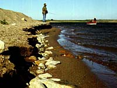
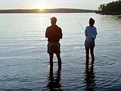

 The Sport Fishing SurveySaskatchewan Environment and Resource Management, Fisheries Branch, in co-operation with the Surveys Unit, Economic Analysis and Statistics Division of Canada Fisheries and Oceans, conducts a survey of sport fishing in Saskatchewan every five years. In the reports from each survey are details about angling in the province. The purpose of the reports are to evaluate the importance of this fishery and provide a better understanding of Canada's fishery. The surveys are conducted by sending questionnaires to 65 per cent of those who purchased angling licenses in the year of the particular survey. The information is then collected and compiled in report form. The following are some interesting statistics about the sport of fishing in Saskatchewan in recent years....
Sixty-eight species of fish occur in Saskatchewan, and of these, seventeen are of interest to anglers. The main species taken are pike, walleye and perch. Seven species of trout plus arctic grayling are pursued by anglers seeking a variety of fishing experiences. Goldeye, burbot, whitefish and sturgeon are among the rarer treats for adventuresome anglers. Overall, the walleye (also referred to here as "yellow pickerel") is the most prefered species in Saskatchewan. The fish resource in Saskatchewan is found in its lakes, streams and reservoirs. There are more than 94,000 lakes in the province with a total surface area in excess of 67,000 square kilometres. Most lakes are very small. The larger lakes, although few in number, contain more than half the surface water area. Most of the larger lakes, and many of the smaller ones, support sport fisheries.
 There are about 220,000 anglers in Saskatchewan each year. This includes licensed anglers as well as Saskatchewan senior citizens and children, who do not require angling licenses. Over three-quarters of the total number are Saskatchewan residents with non-resident Canadians and others making-up the rest. Over two-thirds of the anglers from the United States come from the West North Central and Mountain regions. Most anglers from out-of-province stay for a four-day fishing trip.
The survey asks anglers to rate certain factors in their choice of fishing destinations. In the last year the survey was conducted, anglers rated environmental factors (lack of pollutants in fish, water quality and beauty of the area), more important than fish (size and catch rate) or personal factors (relaxation, angler crowd, catching fish, togetherness and companionship).
In recent years of angling in Saskatchewan, an average of 10 million fish are caught each year, with less than half of this number being retained. That's a lot of fish! A higher proportion of stocked species are kept in comparison with native or wild species. Anglers spend about $85 million on activities directly associated with sport fishing each year. These include expenditures for accomodation, food, travel, bait, licences and so on. Anglers invest a total of over $240 million (including major durables and property). What this means is that sport fishing is an important component of the natural resource sector of the province.
Copies of the complete Sport Fishing in Saskatchewan reports can be obtained from:
|